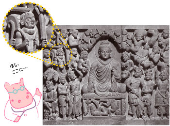
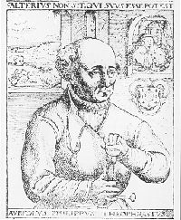
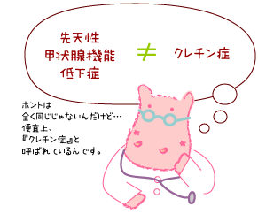

|
Lesson3 : 先天性甲状腺機能低下症（クレチン症）の歴史
3-1 クレチン症という病名
クレチン症（cretinism）は、先天性甲状腺機能低下症（congenital hypothyroidism)とほぼ同じ意味で使われていますが、歴史的にはクレチン症という言葉があり、その後で甲状腺機能低下症という言葉が使われるようになったので、少し違う意味もあります。クレチン症の歴史的な背景を知ると、この病名の由来がわかります。
3-2 クレチン症の歴史歴史の資料で、クレチン症と考えられる人が見られるのは、古代インドの彫刻での甲状腺腫を伴った小人（侏儒：こびと）の像がその代表で、ヨーロッパでもとくにアルプス地方では、大きな甲状腺腫を持つ人が19世紀終わり頃まで多くみられるなど、1500〜2400年の歴史があります。 甲状腺腫と精神発達遅滞（遅れ）が関連していることは、16世紀、近代医学の始祖の一人といわれるドイツ系スイス人のパラケルスス（Paracelsus）が初めて明らかにしました（1527年）。 |
 |
クレチン（cretin）という言葉は1750年に初めて使われ、フランスの「ディドロ（Diderot）の百科全書」に次のように書かれています。 |
出典：ガンダーラ美術にみるブッダの生涯（栗田 功著） p83 |
|
『アルプス地方の特定の地域Valais生まれの人間の一種（a species of men）。聾唖（ろうあ）、知能障害があり、著明な甲状腺腫を持つもの（1754年）』 このように、クレチン症という言葉は、特定の地方に多くみられる甲状腺腫（地方病性甲状腺腫）の中で、精神発達遅滞や発育不全（低身長）を伴うものと理解されていました。 本来のクレチン症は、実は食事性のヨード欠乏により起こります。このことが広く明らかにされたのは、19世紀になってからです。そのため、ヨーロッパ、特にスイスなどでは19世紀になってもクレチン症は多くみられました。 |
 |
一方、北米（アメリカ合衆国やカナダ）では、甲状腺腫の無い散発性クレチン症がほとんどであることが、1920年代に明らかにされ、ヨーロッパのクレチン症と区別するために北米のクレチン症を「若年性粘液水腫（ juvenile myxoedema）」と呼ぶことがあります。 |
パラケルススの肖像 |
このように、クレチン症の原因が分からない時代に、いろいろな病名で呼ばれていたというわけです。 |
|
1950年代以降、甲状腺に関する検査方法が進歩し、ヨーロッパなどの甲状腺腫を伴う地方病性クレチン症の多くが、甲状腺自体の問題ではなくヨード欠乏で起こること、一方、北米などの若年性粘液水腫の多くが、甲状腺自体が無かったり（欠損性）、正常な場所ではないところにあったり（異所性）するために起こることが証明され、病名が整理されるようになりました。
病名は、多くは病気の原因を元につけるようになっているので、クレチン症も正式には、「先天性甲状腺機能低下症」が正しいことになります。そして、ヨード欠乏による甲状腺機能低下症のことを「クレチン症」と呼ぶべきとの考えもあります。 しかし、病気の名前というものは、呼びやすく簡単である方が何かと都合のよいものです。英語なら「先天性甲状腺機能低下症」を意味するCongenital Hypothyroidismを使っても、論文などでは「ＣＨ」と略して書いたりできますが、日本語の場合、「先甲」では様になりません。そんなわけで「クレチン症」が一般的に使われ続けているのです。 |
 |
病名の中には、発見者の名前をとって「橋本（氏）病」とか「バセドウ（氏）病」とかつけられたものがあります。日本の辞書などには「クレチン病」と書いたものが多く、これはきっと「クレチン」という言葉を、発見者の名前と同じような意味合いがあるものとしてつけたもののようです。しかし、クレチン（cretin）は病気の人自体をさす言葉で、病名としてはドイツ語でKretinismus、英語でcretinismとなり、「・・・症」と訳される「-ism」が「クレチン」についただけですから、「クレチン症」が医学用語としてはふさわしいことになります。
ちょっと詳しい説明をしますと、国際的な「疾病、傷害及び死因分類」として使われている「疾病及び関連保健問題の国際統計分類：International Statistical Classification of Diseases and Related Health Problems（以下「ＩＣＤ」と略）」の最新版の、ＩＣＤ10 国際疾病分類第10版（2003年改訂）では、E00.9 先天性ヨード欠乏症候群，詳細不明の下位分類として、20051691 クレチン病、20070357 地方病性クレチン病の病名が使われています。どうやらそのため、わが国の代表的な辞書（広辞苑、大辞林、日本語大辞典など）にはすべて「クレチン症」ではなく「クレチン病」として記載されているようです。